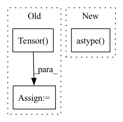

Pattern ID :14015

Before Change
img = subject_dict[str(channel)].as_sitk()
img_resized = resize_image(img, preprocessing["resize"])
// always ensure resized image spacing is used
subject_dict["spacing"] = torch.Tensor(img_resized.GetSpacing())
subject_dict[str(channel)] = torchio.ScalarImage.from_sitk(img_resized)
// // for regression
// if predictionHeaders:
After Change
preprocess_lower = preprocess.lower()
// special check for resample
if preprocess_lower == "resize":
resize_values = tuple(preprocessing["resize"]).astype(np.float)
transformations_list.append(torchio.Resize(resize_values))
elif preprocess_lower == "resample":
if "resolution" in preprocessing[preprocess_lower]:
// resample_split = str(aug).split(":")
In pattern: SUPERPATTERN
Frequency: 4
Non-data size: 3
Instances
Fragment ID: 46499460
Project Name: mlcommons/gandlf
Commit Name: a958284e83105a755b4f7dbb38e48b947fb2dae0
Time: 2022-01-26
Author: sid.cre8er@gmail.com
File Name: GANDLF/data/ImagesFromDataFrame.py
M Class Name: AnonimousClass
N Class Name: AnonimousClass
M Method Name: ImagesFromDataFrame(3)
N Method Name: ImagesFromDataFrame(3)
M Parent Class:
N Parent Class:
M File Name: GANDLF/data/ImagesFromDataFrame.py
N File Name: GANDLF/data/ImagesFromDataFrame.py
M Start Line: 62
M End Line: 240
N Start Line: 62
N End Line: 222
'>
Before Change
w_percentile = np.percentile(w_copy, percentile)
b_percentile = np.percentile(b_copy, percentile)
new_w_mask = torch.Tensor((w_copy >= w_percentile).astype(int))
new_b_mask = torch.Tensor((b_copy >= b_percentile).astype(int))
self.w_mask = new_w_mask
self.b_mask = new_b_mask
After Change
b_percentile = np.percentile(b_copy[task_num], percentile)
new_w_mask[task_num] = (w_copy[task_num] >= w_percentile).astype(int)
new_b_mask[task_num] = (b_copy[task_num] >= b_percentile).astype(int)
self.w_mask = torch.Tensor(new_w_mask)
self.b_mask = torch.Tensor(new_b_mask)
'>
Fragment ID: 46499492
Project Name: beyond-ml-labs/beyondml
Commit Name: 03dd7b87e47d75ba5a7317f31e1ff50b340898a7
Time: 2022-06-02
Author: 77127228+jacobrenn@users.noreply.github.com
File Name: mann/burning/layers/MultiMaskedDense.py
M Class Name: MultiMaskedDense
N Class Name: MultiMaskedDense
M Method Name: prune(2)
N Method Name: prune(2)
M Parent Class: torch.nn.Module
N Parent Class: torch.nn.Module
M File Name: mann/burning/layers/MultiMaskedDense.py
N File Name: mann/burning/layers/MultiMaskedDense.py
M Start Line: 43
M End Line: 52
N Start Line: 40
N End Line: 58
'>
Before Change
b_percentile = np.percentile(b_copy, percentile)
new_w_mask = torch.Tensor((w_copy >= w_percentile).astype(int))
new_b_mask = torch.Tensor((b_copy >= b_percentile).astype(int))
self.w_mask = new_w_mask
self.b_mask = new_b_mask
self.w = torch.nn.Parameter(
After Change
w_percentile = np.percentile(w_copy[task_num], percentile)
b_percentile = np.percentile(b_copy[task_num], percentile)
new_w_mask[task_num] = (w_copy[task_num] >= w_percentile).astype(int)
new_b_mask[task_num] = (b_copy[task_num] >= b_percentile).astype(int)
self.w_mask = torch.Tensor(new_w_mask)
self.b_mask = torch.Tensor(new_b_mask)
'>
Fragment ID: 46499495
Project Name: beyond-ml-labs/beyondml
Commit Name: 03dd7b87e47d75ba5a7317f31e1ff50b340898a7
Time: 2022-06-02
Author: 77127228+jacobrenn@users.noreply.github.com
File Name: mann/burning/layers/MultiMaskedConv2D.py
M Class Name: MultiMaskedConv2D
N Class Name: MultiMaskedConv2D
M Method Name: prune(2)
N Method Name: prune(2)
M Parent Class: torch.nn.Module
N Parent Class: torch.nn.Module
M File Name: mann/burning/layers/MultiMaskedConv2D.py
N File Name: mann/burning/layers/MultiMaskedConv2D.py
M Start Line: 98
M End Line: 107
N Start Line: 85
N End Line: 103